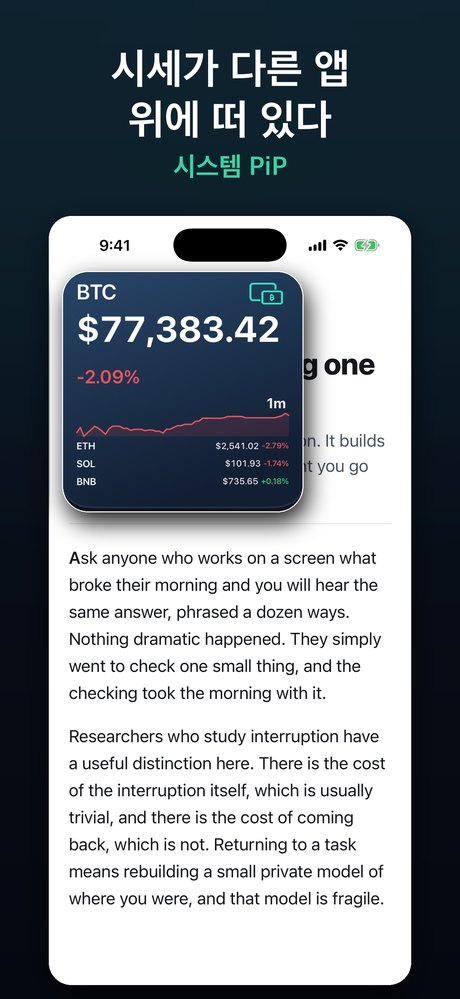
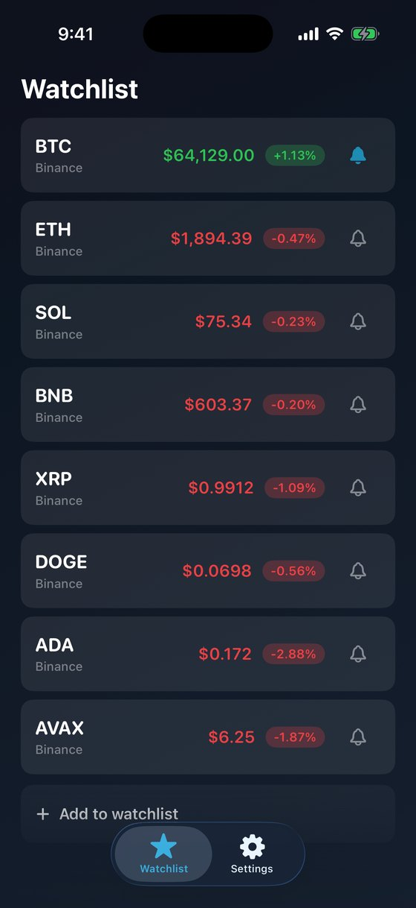

암호화 시세 · iPhone 및 iPad
암호화 시세를 다른 앱 위에 띄웁니다.
암호화 시세는 실시간 호가를 시스템 화면 속 화면으로 보냅니다. BTC, ETH, SOL 가격이 작은 창에서 계속 갱신되어, 읽거나 스크롤하거나 영상을 보는 동안 한눈이면 됩니다. 탭을 바꾸거나 당겨서 새로 고칠 필요가 없습니다.
1코인 무료 · 선택적 1회 결제 · 구독 없음, 광고 없음, 계정 없음

암호화 시세 · iPhone 및 iPad
암호화 시세는 실시간 호가를 시스템 화면 속 화면으로 보냅니다. BTC, ETH, SOL 가격이 작은 창에서 계속 갱신되어, 읽거나 스크롤하거나 영상을 보는 동안 한눈이면 됩니다. 탭을 바꾸거나 당겨서 새로 고칠 필요가 없습니다.
1코인 무료 · 선택적 1회 결제 · 구독 없음, 광고 없음, 계정 없음

떠 있는 창이 제품이므로 결제 벽 뒤에 두지 않습니다.
관심 종목에서 실제로 보는 심볼을 고릅니다.
호가가 실제 시스템 화면 속 화면 창으로 이동합니다.
가격은 맨 위에 남아 계속 갱신됩니다.
공개 시장 데이터. 타이머 폴링이 아니라 websocket으로 흐릅니다.
1분부터 1개월까지 스파크라인. 모두 실제 캔들에서 만듭니다.
떠 있는 창을 아무 구석으로 끌거나, 필요 없을 때 화면 밖으로 넣을 수 있습니다.
강제 다크 테마. 오래 보기보다 한눈을 위해 만들었습니다.
영원히 무료
$0
이 앱을 쓸 이유가 되는 모든 것.
평생 잠금 해제
$9.99
한 번 결제입니다. 구독이 아닙니다.




동영상 앱과 같은 실제 시스템 기능입니다. 그래서 앱을 떠나도 창이 남고 화면의 무엇이든 위에 앉을 수 있습니다.
iOS는 활성 오디오 세션이 있는 앱에 대해 화면 속 화면 프레임을 계속 갱신합니다. 암호화 시세는 세션을 열어 두기 위해 무음, 0볼륨 버퍼만 재생합니다. 들리는 소리는 재생하지 않고 녹음하지도 않습니다.
Binance 공개 시장 데이터, 읽기 전용입니다. 거래, 지갑, 붙여 넣을 API 키, 앱 안 추천 링크가 없습니다.
당신을 식별할 수 있는 데이터는 없습니다. 계정도 추적도 없습니다. 유일한 측정은 익명 사용 보고서 1건(첫 주에 PIP를 사용했는지)이며 당신과 연결되지 않습니다. 관심 목록과 설정은 기기에 남습니다. 자세한 내용은 개인정보 처리방침를 참고하세요.
지원합니다. 다이내믹 아일랜드, 잠금 화면 실시간 현황, 홈/잠금 화면 위젯은 앱과 같은 마지막 시세를 보여 줍니다. 앱 또는 화면 속 화면이 켜져 있을 때 갱신되고, 둘 다 멈추면 멈춘 채 유지됩니다. 초 단위 시세가 아니며 잠금 해제 뒤에 있지도 않습니다. 거의 실시간인 표면은 화면 속 화면입니다.